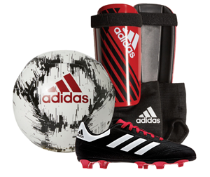
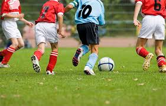
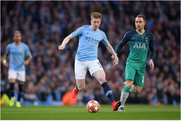

Soccer; THE best sport in the world!
Some may disagree, but soccer is the best sport in the world!
Played around all countries, with different leagues, everyone knows what it is.
Soccer isn't that hard to learn. I'll be teaching you the basics about it, and I'll also share some of my favourite players and what I think are the best teams in the Premier league. I'll also add in some information about Messi and Ronaldo because they are apparently the best players in the world. I'll also be talking about some major 'football' events, and why they are so big in the soccer culture.
SOCCER RULES

The rules for soccer are very basic. First of all, you need the proper equiptment. You most definitely need cleats so that your feet can grip the ball and whatever surface your playing on ( except concrete or gravel). You also need shinpads to protect your shins from being kicked by the other team, because that really hurts ( I talk from experience).
You also REALLY need a soccer ball, because you can't play soccer without that. It's the main thing you need when playing soccer.
There are many rules to the game of soccer. The big one is to just have fun while playing it, but also try your best.
Now, for the real rules. You NEED to wear the equiptment I just listed, because a referee will not let you play without it. You also need two nets, a field, and a referee is required once you hit U8.
There are also rules about the tackles you make. You are not allowed to push, purposely kick, punch, or make any movement to harm another on the field. You are not allowed to use your hands in soccer; a hand ball happens when the ball hits your fingers to your shoulder. Everywhere else is alledgibe.
When you are about U12, the referee is allowed to give cards for that. You are also not allowed to swear at the ref or to another player.

For a coach, you are not allowed to constantly argue with the ref; that can end with a suspension of the coach and being kicked off the property. You have to be a fair coach, both to the ref and to the kids on your team. And remember, this is all a game. Not the premier league. They are kids, not adults. They are learning. So let them play.
That's about the basics of the sport. The other rules consist of offside, meaning when a player is behind the defender before the ball is played, and that ends with a free kick to the defending team, but that starts in U11/U12. There's also the out rule, when the ball leaves the field, either on the sideline or on the touchline. That would either be a free kick, a goal kick, or a corner kick. For a throw in, you are not alowed to raise your feet off the ground, and the ball MUST go over your head for it to be legal. For the younger ages, you're allowed to try again, but for the older ages, you don't get a retry and the ball goes to the other team.
My Favourite Players
Okay, so you've probably all heard of Messi and Ronaldo. They are good players, I'll give them that, but they are NOT on my favourite players list. I have selected 6 players, both men and women, who I think are my favourite and THE BEST in my eyes. You guys may not agree with this, but yet again, this is my opinion.
1) Kevin de Bruyne
Kevin de Bruyne is MY favourite man player. He is a talented player, who plays for Manchester City. 
Kevin de Bruyne
is a 28 year old footballer, who plays out of England, where Manchester City is. He also plays for the Belgium National Team, and is a Midfielder for both. I love him as a player because his touches are amazing and his shot is wicked. If you're interested, click HERE to watch a video of him.
2) Beth Mead
Beth Mead is too an English Footballer, but this time, is a woman. She too plays Midfield, now mostly Forward, and is thought to be one of the worlds best superstars. She has amazing footskills, and Beth Mead is an Mentor and Idol to everyone around the world. I picked her for this list because watching her has helped my play, and has taught me some useful things about soccer.
3) Janine Beckie
 Janine Beckie is our first Canadian soccer player, and is one of the better ones. She is an inspirational player, and is going on to great things later in her career. The 25 year old joined the Candian National Team in 2015, when she was either 19 or 20, and too plays for the Womens Manchester City team. She is on the list because she is a phenomenal player with a bunch of talent and is an inspiration to us all. Click HERE to watch a video on her highlighted plays and goals.
Janine Beckie is our first Canadian soccer player, and is one of the better ones. She is an inspirational player, and is going on to great things later in her career. The 25 year old joined the Candian National Team in 2015, when she was either 19 or 20, and too plays for the Womens Manchester City team. She is on the list because she is a phenomenal player with a bunch of talent and is an inspiration to us all. Click HERE to watch a video on her highlighted plays and goals.
4) Ashley Lawrence
Ashley Lawrence is too a Canadian Women’s National team player who, in 2019, won the Canada Women's National Team Player of the Year. The 24 year old Midfielder joined the National team in 2015, when she was either 19 or 18. Lawrence is one of my newly found favorite players, and she is very talented. I put her on this list because I think that by watching her, you can learn a lot about soccer and she is an inspiration to all young soccer players.
5) Sergio Aguero
 Sergio Aguero, who also plays for Manchester City, is too an amazing player. The 31 year old Forward has taken on a Manchester City all time record for goals, with an estimated 179. He is the fourth highest goal scorer in the Premier League. He also plays for the Argentina National Team, and is recognized around the world as one of the best strikers. He has an amazing shot, and is a very talented player. I’ve decided to add a video of Aguero’s best goals, just so you can see what a talented player he is.
Sergio Aguero, who also plays for Manchester City, is too an amazing player. The 31 year old Forward has taken on a Manchester City all time record for goals, with an estimated 179. He is the fourth highest goal scorer in the Premier League. He also plays for the Argentina National Team, and is recognized around the world as one of the best strikers. He has an amazing shot, and is a very talented player. I’ve decided to add a video of Aguero’s best goals, just so you can see what a talented player he is.
6) Christine Sinclair
Yes, Sinclair is one of the best Women’s Soccer players ever, and that’s why she made this list. The 36 year old footballer who grew up in Burnaby, B.C, began to play when she was 4 years old. Sincy, this year (2020), has broken the record for most goals scored, with 186. Sinclair is one of the most inspirational women’s soccer player, and one of the better ones, too. Click HERE to watch a Christine Sinclair goal Compilation.
I'm just going to add some small information about MY favourite Premier League teams and why I think this.
Okay, let's start with my FAVOURITE team; Manchester City. They are one of the two teams located in Manchester, and, to me, are the better ones. Now, this is just my opinion ( sorry if you are a Manchester United fan!), but I love this team and the players on it. Here's a video on Manchester City's best moments. I can't describe how great of a team they are, and how far they have come from a couple of years ago. They won the Premier League Cup back a year or two ago, and are sitting in 3rd place right now.
Hmm. What other team do I like? I like how Chelsea plays; they have their moments. I also LOVE Arsenal, although they aren't doing that well this year. They are very talented, and if they got a better manager, they would do very well. They are in either 11th, 12th, or 13th place right now. And they are usually in sixth. So you can see how the manager affects their play. But I still love that team, as my dad does.
And that's it. I really only like two teams in the Premier League, although many of the teams in it are amazing and talented. I just talked about my favourites. You can look at all of the Premier League teams by clicking HERE to see best moments and highlighten moments from the match.
_______________________________________________________________________________
Like I said before, I would add some information on Ronaldo and Messi. Sure, they aren’t my favourite players, but they are very talented and are known throughout the world. So here is some information ( and some links and photos) about two well known players.
Messi
Lionel Messi, for me, is the better of the two. Remember, this website is my opinion. Messi is a 32 year old footballer from Argentina, which is the National team he plays for, as well as Barcelona FC. He is the third richest soccer player in the world, third after David Beckham and Cristiano Ronaldo . Messi, a talented forward and winger, made his first appearance at Barcelona in 2004. That was when he was only 17 years old, making him the youngest official player and goal scorer in the Spanish la Liga ( which is the Country's highest league of soccer). Messi has scored
498 goals in his career, 387 of those being hatricks.
He is a very talented player, I'll give him that.
Ronaldo
Cristiano Ronaldo is a very talented player as well. The 35 year old player is the richest soccer player as of today, getting a salary of 31 million EUR as of 2019. The Fellow Striker has scored many goals in his career as well, and is too a very good player. He currently plays for Juventus F.C as their forward, and is number 7 on the team. Too a very talented player, he has led many younger people to their dreams by showing them his talent and inspiring them to become the best they can.
MAJOR SOCCER EVENTS
There are many soccer events in the world. One of the biggest would have to be the Fifa World Cup. There is also the Olympics, which is pretty big considering that soccer is played in it. These are the two big soccer events that I will be talking about.
Fifa World Cup
The Fifa World Cup is a huge event that includes all of the countries around the world to submit a team to try and win this major event.
The years switch, meaning one year it will be men, and one year it will be women. First, to be able to play in this, you need to qualify. If you do not qualify, you do not go to the World Cup. Then the tournament will start once the teams have been decided.
First is the group stage, where teams will compete within 8 groups of 4 teams. Each group will then play what is called a Round Robin tournament, in which each team is schedueled to play three matches against different teams.
After these stages of just trying to win your group, you will go to the knockout rounds, where if you lose, you're gone. Teams will continue to be knocked out until only two are left. There will be a 1st and 2nd match, and a 3rd and 4th match, and the winners will be decided from that.
And that's basically it. The Fifa World Cup is the biggest soccer event in the world, and lots of people watch these games.
Olympic Games
The Olympic games too alternate between Winter and Summer; this year, 2020, the Summer Olympics are on, meaning soccer will be happening. Women and Men play in this sport event, like the World Cup. This is a big event, the Olympics in general, and many people come to watch the game itself. It is basically set up like the World Cup. There is a round where you try to win your division and get points, and then there is a round where you lose, you are done. Then, there is a third place game and a first place game for the top 4 teams. And that's basically it. They are similar in many ways, but each are different and HUGE events for soccer, where the most talented players go to try and bring home a trophy. To find out more about this, you can click HERE to learn more and read more about the history of 'football' in the Olympics.
And that's about it with my website. There is more to soccer, and you can go and look at some other websites to learn more, but I thank you for finishing this and reading about my favourite sport and what is hopefully yours. At the bottom, I'll add some more videos and more photos, and then I'll be done. Thank you!

Top Soccer Moments
50 Famous goals
References
User, S. (n.d.). Football Rules: How To Play Football/Soccer. Retrieved from https://www.rulesofsport.com/sports/football.html
1) This website was helpful because it helped me make sure all of the rules for the game of soccer are true, and helped me double check to make sure I was right. This was helpful so that I wouldn't be putting fake rules onto my website. 2) This website is valid because all of the soccer rules are real, to my knowledge. This is valid because even though I've never heard of the author or the website before, all of this was a valid source and was very helpful for my website.
Wiki. (2015, July 19). Beth Mead. Retrieved February 18, 2020, from https://en.wikipedia.org/wiki/Beth_Mead
1) I learned from this website about one of my favorite soccer players and about all of her achievements and her life as a soccer player. I learned about the many different things she has done as a young woman, and why she is an inspiration to all young women, me included. 2) This is a valid website because, even though it was Wikipedia, all of the information was true. I know this because, even after additional research, I
knew most of this and the research helped a bit.
Wikipedia. (2005, July 1). Lionel Messi. Retrieved February 18, 2020, from https://en.wikipedia.org/wiki/Lionel_Messi
1) Even though not one of the websites I used for mine, this is where I got some of the information I used when writing that Messi paragraph. I learned from this many things about Messi that I may have known but not really looked into, and also a lot of things I didn't know. It was a very helpful source and taught me many things about this famous soccer player. 2) I think this is a valid source because all of the information has to be pretty close to true for it to be on a website. I did some background research as well, and used some of the websites that I used when making MY website, and found out that this information was true.